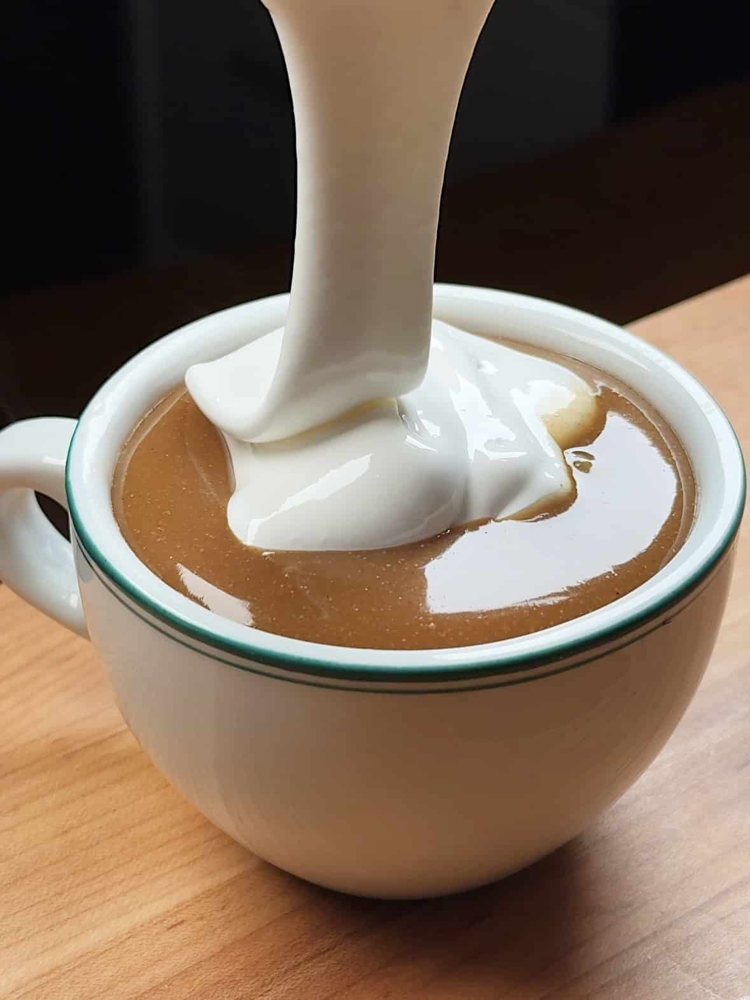

Liquid Gingerbread

Description
This heartwarming liquid gingerbread encapsulates the beloved taste of
gingerbread in a liquid form, delivering a soothing, sugary warmth that
defies the cold. Your milk of choice swirls together with ginger,
cinnamon, nutmeg, cloves, molasses, and brown sugar, creating a rich and
aromatic winter pick-me-up.
Ingredients
Marshmallowy Meringue Topping
- 2 egg whites
- 1/2 cup (100g) sugar
Liquid Gingerbread
- 2 1/2 cups (600g) milk
- 1/8 cup (30g) or 2 tablespoons molasses, plus more to taste
- 1/8 teaspoon ground nutmeg
- 1/4 teaspoon ground cinnamon
- 1 1/2 teaspoons ground ginger, plus more to taste
- 2 teaspoons vanilla extract
- 6 whole cloves — the spice, not the garlic kind
- 1/4 cup (50g) brown sugar
- Kosher salt1 3/4 cups (250 g)
- 1 tablespoon (7 g) cornstarch
Instructions
Make the marshmallowy topping (meringue):
-
Bring a pot of water to a simmer and reduce the hear to low heat.
Combine the egg whites and sugar in a medium bowl (large enough to cover
the top of the pot). Place the bowl on top of the simmering pot of water
(making sure the bottom of the bowl doesn’t touch the water) and
constantly stir until the mixture reaches 175°F or until the sugar is
fully dissolved in the egg whites and cloudy-looking.
-
Remove the bowl from the pot and immediately whip the mixture using an
electric mixer on high speed until it becomes white and fluffy. Set
aside.
Make the liquid gingerbread:
-
In a saucepan over medium heat, combine the milk, 1 tablespoon molasses,
1/8 teaspoon nutmeg (if using), 1/4 teaspoon cinnamon, 1 1/2 teaspoons
ginger, 2 teaspoons vanilla, cloves, brown sugar, and a pinch of salt.
Bring to a boil. Reduce the heat to low and continue simmering.
-
Carefully taste the mixture and add more molasses or ginger to
preference. I like mine really gingery so I add and extra 1/2 teaspoon
of ground ginger, plus 1/2 tablespoon molasses.
-
In a small bowl combine the cornstarch with a 1/4 cup of water or milk.
Add the mixture to the liquid and vigorously stir to combine until it
comes to a boil and thickened, for a few minutes. You can add more
cornstarch if you prefer the drink a little thicker. Don’t worry if the
color isn’t as dark as the one in the picture, the result may vary
depending on the molasses you’re using. Some of my tests ended up way
lighter, similar to chocolate milk.
-
Strain the drink and serve with a dollop of meringue on top — you can
toast it with a blow torch for extra flavor.